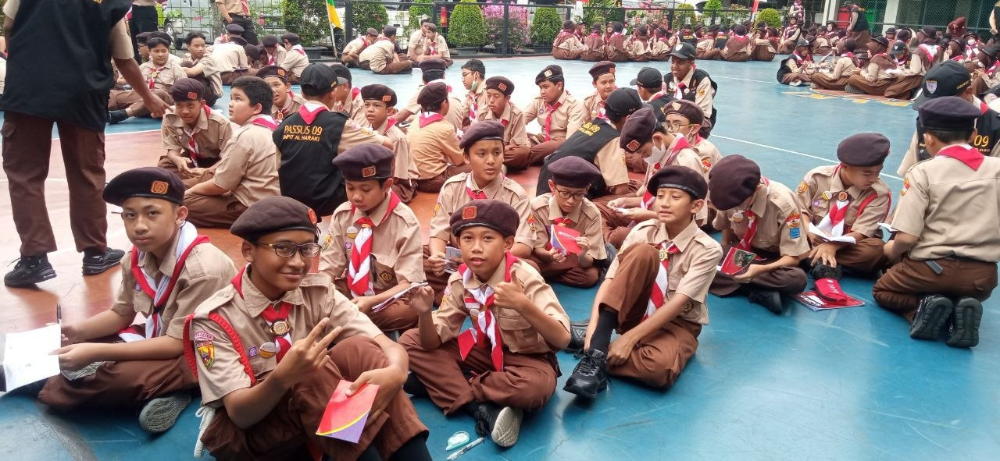
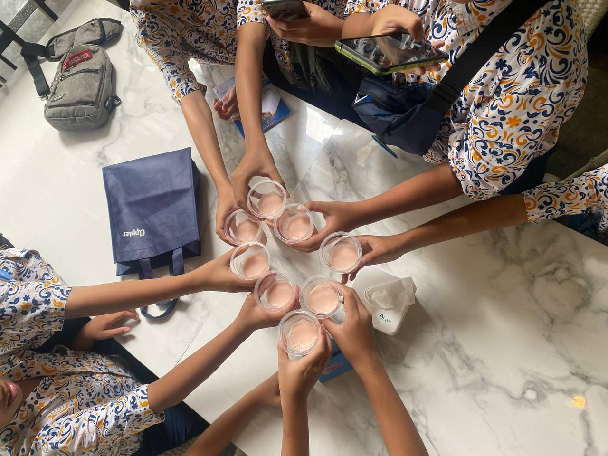
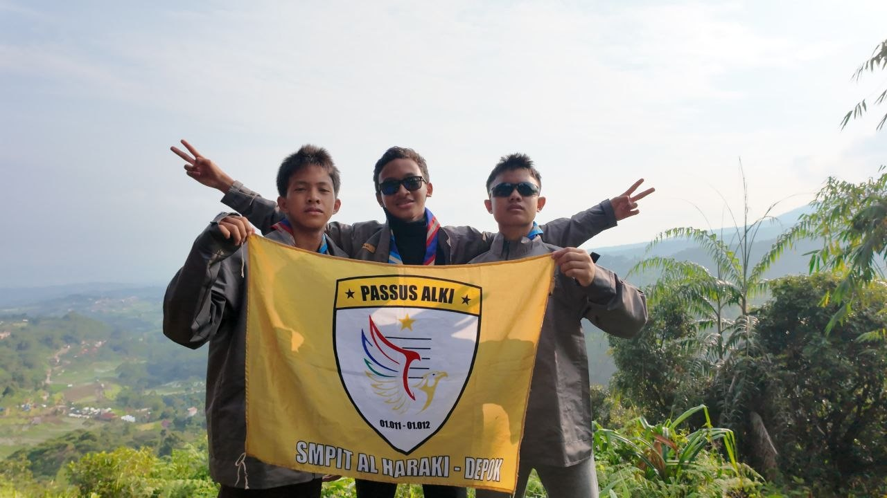
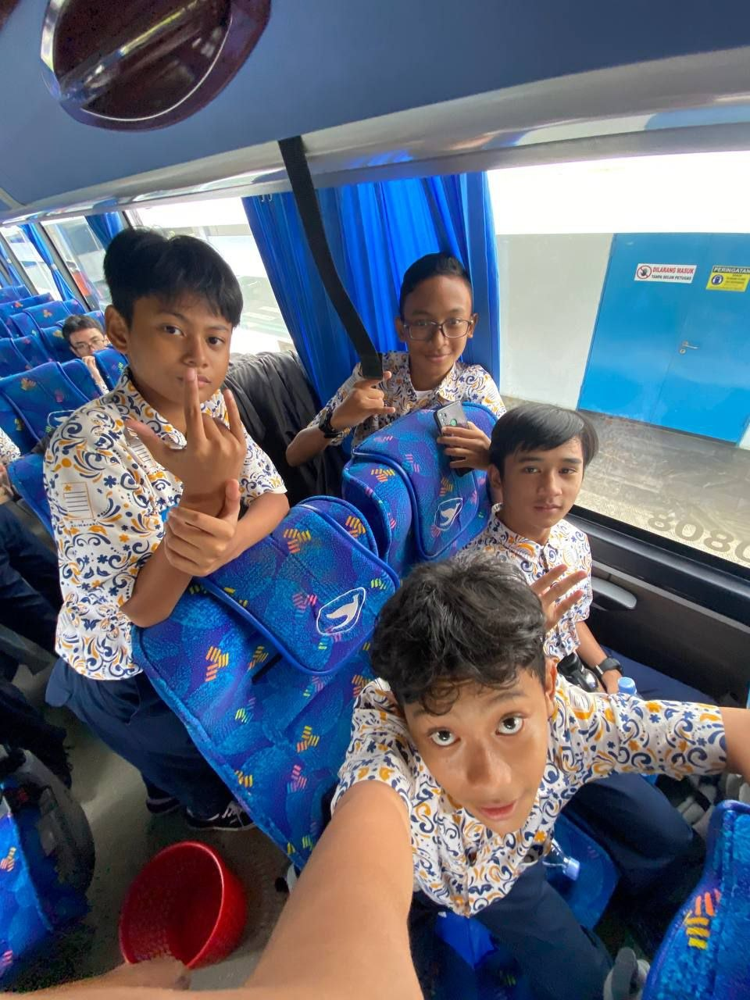

Karya Nyata dari Proses Belajar


Website ini digunakan untuk menampilkan hasil Ujian Praktik Terintegrasi.
Website ini berfungsi sebagai portofolio digital yang berisi karya dan pengalaman belajar.
Menampilkan hasil karya serta melatih kemampuan membuat website sederhana.


Hubungan antara pembelajaran fotografi dengan dunia kerja.
Agar penonton memahami pentingnya pembelajaran berbasis praktik.
Belajar tentang tanggung jawab, ketelitian, dan kreativitas.